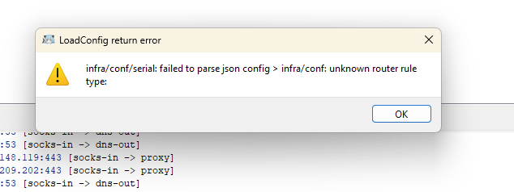

поднимал сервак не я,а мой друг.он сделал так,что бы весь трафик проксировался,кроме ру сегмента.не хочет менять настройки на серваке.соответственно каждый раз при поиске гугл просит капчу.
если я в настройках маршрутизации указываю напрямую google.com,то отваливаются news.google.com
как сделать так что бы только google.com шёл напрмую?
не вижу какой-то связи в предложениях
у гугла не только этот домен, там еще www.google.com и куча других, которые могут просить капчу
пробуйте preferences - routing - simple route, удалите все правила из интерфейса и переделайте их в custom route, пример с гуглом
{
"rules": [
{
"domain": [
"www.google.com"
],
"domain_keyword": [
],
"domain_regex": [
],
"domain_suffix": [
],
"geosite": [
],
"outbound": "direct"
}
]
}
а лучше взять впску где не будет капчи. (а если её раньше небыло, то значит кто-то спамит в гугл через ip адрес впски)
я не сильно разбираюсь,поэтому всё рассказал 
я же всё правильно делаю?
{kind=link}
а потом это

обновись до последней версии проги
нет обновлений говорит
установлена 3.26-2023-12-09
скачай вручную новую версию с гитхаба https://github.com/MatsuriDayo/nekoray/releases/download/4.0-beta4/nekoray-4.0-beta4-2024-10-09-windows64.zip
спасибо!это помогло,но теперь почему-то проксирует весь трафик.на прошлой версии я делал,что б только firefox проксировал.сделал,как было на старой версии,но не работает.или это не так делается?
{kind=link}
вроде бы разобрался
убрал галку с встроен. Tun* и заработало как надо. спасибо за помощь! 
если вам нужен прокси только в firefox то и прописывать его надо именно там, системный прокси активирует прокси в прогах которые его поддерживают. а для TUN режима с белым списком нужен default outbound - direct
спасибо,работает теперь как надо.дополнительно из того что вы написали,я не делал
проксирует только firefox(торренты,тг,стим идут напрямую),гугл в firefox идёт напрямую
подскажите пожалуйста,как в будущем я могу добавить сайты в список исключения?вот как вы писали чуть выше.я пробовал сам,но не получается
Дабы не плодить темы…
До вчерашней ночи никаких проблем не было, сегодня отказался работать режим TUN.
Пробовал разные версии Neko, и 3.25 и 3.26 и beta 4.0
При подключении в режиме системного прокси - работает, все что может пробрасывает через VPS/VPN.
А вот при включении TUN - интернет просто пропадает на машине. Причем на другой машине (другой IP) все работает ровно с теми же настройками.
Какие могут быть идеи? Если нужны скрины каких-либо настроек, скину. Но повторюсь, на другой машине, ровно на таких же настройках - все гуд.
а если полностью отключить брандмауэр windows?
вам нужны исключения для прокси или для tun с белым списоком процессов?
Мне по факту нужно запустить 4-5 процессов через прокси (браузер, дискорд, да по работе пару приложений).
Сейчас протестил на ноутбуке (IP соответственно такой же как и на основном компе), тестил на версии Beta 4.0.
На ноутбуке режим TUN запустился с такими настройками:
{kind=link}
Интернет не отвалился, 2ip показывает IP VPSа, но, показывает он его не только в firefox но и в остальных браузерах, как будто работает не по TUN.
На основном компе в режиме TUN просто тухнет интернет, не работает ни в браузерах ни в приложениях. Но в то же время VPS пингуется.
Единственное что приходит в голову, где-то ночью-утром у меня ребутнулась основная машина, и ожила с предложением обновить винду до 11, отказался. Но возможно она таки что-то обновила для 10 винды.
default route должен быть bypass
пробуйте выключить брандмауэр windows
Что есть default route?
Брандмауэр выключен совсем и полностью, причем давно.
Смущает такая строка при подключении через TUN на основном компе:
INFO[0002] [2423711698 7ms] router: found process path: \Device\HarddiskVolume2\Users\kamip\OneDrive\Desktop\nekoray1\nekobox_core.exe
Он свое же “ядро” пытается что ли пробросить…
настройки - маршруты - simple route
переустановите некобокс и не надо его в папку onedrive кидать, и перезагрузите пк
Попробовал и bypass и proxy.
Попробовал снести все и скачать заново.
Перекинул в корень диска С
История та же, интернет в режиме туннеля отсутствует, а в журнале бесконечно пишет:
INFO[0026] [3805213502 26ms] router: found process path: C:\nekoray\nekobox_core.exe
И пока что даже близко не могу понять, что же могло измениться после вчерашнего ребута машины.
исключения для прокси
вот как тут вы писали,просто хочу узнать как правильно прописывать,что бы другие сайты напрямую открывались
{
"rules": [
{
"domain": [
"www.google.com"
],
"domain_keyword": [
],
"domain_regex": [
],
"domain_suffix": [
],
"geosite": [
],
"outbound": "direct"
}
]
}
через запятую и точно так же как с гуглом, domain - полное совпадение домена, keyword - совпадение по любому слову домена, suffix - совпадение по концу названия домена
спасибо
Зашел с козырей, переустановил винду…
Теперь и с режимом TUN работает, но вот только гонит через прокси вообще все. Хотя в вайтлисте только firefox. Пробовал и bypass и proxy, ничего не изменилось.
что в логе?
INFO[0019] [495797214 0ms] router: found process path: C:\Program Files\Google\Chrome\Application\chrome.exe
INFO[0017] [168583190 0ms] router: found process path: C:\Program Files\Mozilla Firefox\firefox.exe
INFO[0000] [3645136671 0ms] router: found process path: C:\Windows\System32\svchost.exe
В общем он туда все подряд тащит, и все браузеры и дискорд и системные файлы.
С фоксом я согласен, а вот все остальное бы как-то отсечь.
Так, вопрос пока закрою, после переустановки винды заработало с отключенным Internal TUN.
Не сразу решил протестить, так как тестил до переустановки и оно не помогало. Видимо какие-то факторы сложились воедино.
Хотя буквально позавчера все работало и с ней.
Блин, а все же не закрою. В таком исполнении добавил в вайт лист Discord.exe, а он решил не запуститься, обновление не проходит (собственно как и без ВПНа). Если без TUN, то запускается.
update.exe забыли